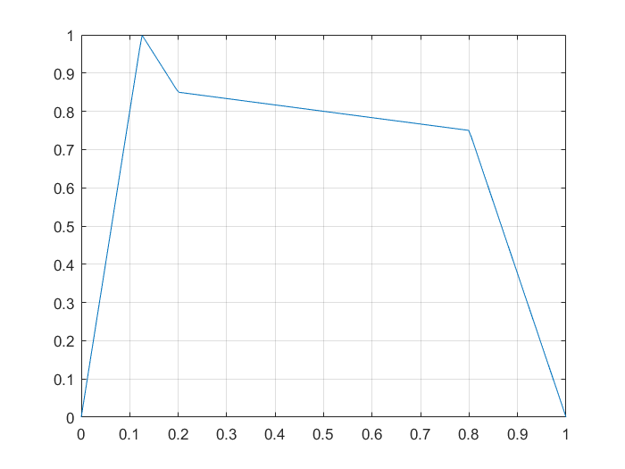
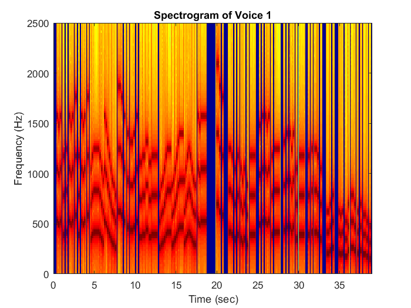
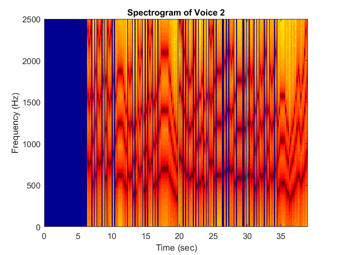
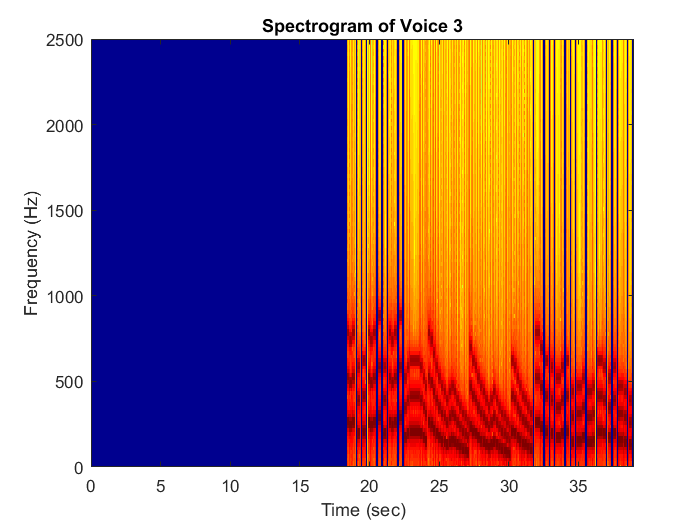
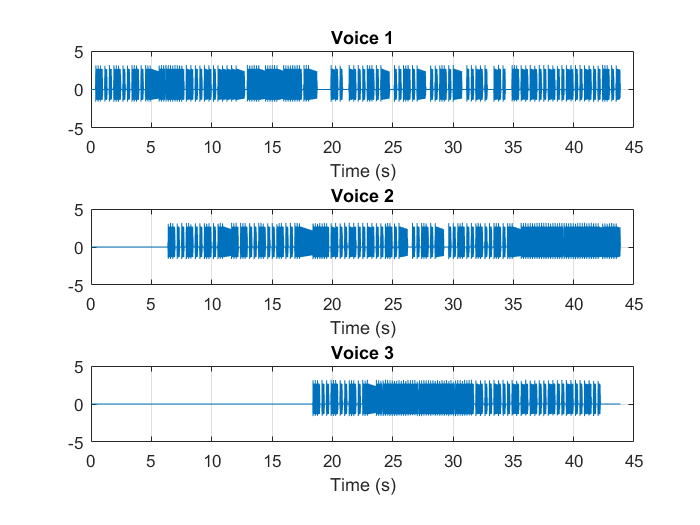
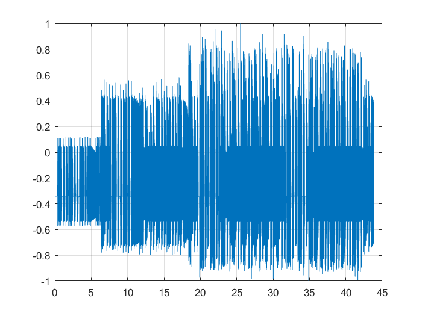

Matt Bachmeier
ECE 203 Lab 4: Synthesis of Sinusoidal Signals -- Music Synthesis 2/26/2017
Contents
Section 4.3
clear all; close all; load bach_fugue;
Section 4.3.1
% timingInfo.m fprintf('Timing Information:\n') bpm = 80 beats_per_second = bpm/60 seconds_per_beat = 1/beats_per_second seconds_per_pulse = seconds_per_beat/4 [sppn,sppd] = rat(seconds_per_pulse); fprintf('Seconds per pulse = %g/%g = %g\n',sppn,sppd, seconds_per_pulse) PulsesPerMeasure = 16; fprintf('Pulses per measure = %g\n',PulsesPerMeasure) fs = 11025; % Sampling rate fprintf('Sampling rate = %g Hz\n',fs)
Timing Information:
bpm =
80
beats_per_second =
1.3333
seconds_per_beat =
0.7500
seconds_per_pulse =
0.1875
Seconds per pulse = 3/16 = 0.1875
Pulses per measure = 16
Sampling rate = 11025 Hz
Section 4.4
% myline.m; %function y = myline(t,t1,y1,t2,y2) %y = ( (y2-y1)/(t2-t1)*(t-t1) + y1 ) .* (t1<=t & t<t2); % ADSR.m; %function y = ADSR(t,t1,t2,t3,t4,A1,A2,A3) % Sum of 4 straight lines: % line 1: (0,0) to (t1,A1) % line 2: (t1,A1) to (t2,A2) % line 3: (t2,A2) to (t3,A3) % line 4: (t3,A3) to (t4,0) %y = myline(t,0,0,t1,A1) + myline(t,t1,A1,t2,A2) + ... %myline(t,t2,A2,t3,A3) + myline(t,t3,A3,t4,0); % envelope.m; %function y = envelope(tin,seconds_per_pulse) % Shift time from [tin(1),tin(end)] to [0,T], % where T = tin(end)-tin(1). %t = tin - tin(1); %T = t(end); % The attack, release, and delay are always the same, it is the slope of the sustain that we are changing. %t1 = 1/8 * seconds_per_pulse; %A1 = 1; %t2 = .2 * seconds_per_pulse; %A2 = .85; %t3 = T - .2 * seconds_per_pulse; %A3 = .75; %t4 = T; % When t2 = .2 and t3 = .8, t3-t2 = .6, % giving us the slope of the sustain. %A3p = (A3-A2)/.6*(t3-t2) + A2; %if A3p < 0 % prevent sustain from becoming negative % t3 = t2 + .6*A2/(A2-A3); % A3p = 0; %end %y = ADSR(t,t1,t2,t3,t4,A1,A2,A3p); tt = linspace(0,1,200); plot(tt,envelope(tt,1)); grid on
Section 4.5
% Analyze MyVoices data file % showVoice; fprintf('\n\nShow initial voice data\n\n') nVoices = numel(theVoices); % Get number of voices numNotes = zeros(1,nVoices); % Pre-allocate array lastNotePulseStart = numNotes; % Pre-allocate array for v=1:nVoices numNotes(v) = numel(theVoices(v).noteNumbers); lastNotePulseStart(v) = max(theVoices(v).startPulses); fprintf('Voice %g has %g notes, last note starts at pulse %g\n', ... v,numNotes(v),lastNotePulseStart(v)) k = min(10,numNotes(v)); fprintf('startPulses durations noteNumbers\n') disp([theVoices(v).startPulses(1:k)' theVoices(v).durations(1:k)' ... theVoices(v).noteNumbers(1:k)']) fprintf('...\n'); disp([theVoices(v).startPulses(end) theVoices(v).durations(end)+1e-12 ... theVoices(v).noteNumbers(end)]); fprintf('\n') end veryLastNotePulseStart = max(lastNotePulseStart); fprintf('Among all voices, the last note starts at pulse %g\n',... veryLastNotePulseStart) NumMeasures = ceil(veryLastNotePulseStart/PulsesPerMeasure); fprintf('This piece +-contains %g measures\n',NumMeasures) PulsesPerSong = NumMeasures*PulsesPerMeasure; TotalTime = PulsesPerSong*seconds_per_pulse; Nsamp = 1 + floor(fs*TotalTime); fprintf('Implementation is %g samples, or about %g seconds\n',... Nsamp,TotalTime) % build voice %function [noteNums,durs] = buildVoice(voiceIn,PulsesPerSong) % Expand voice description. % The input data only tells us the pulse positions where notes % start and their durations. We use this to build a list of % pulses for the whole piece. If no note starts at pulse % k, then we set the note and duration for that pulse to zero. %durs = zeros(1,PulsesPerSong); % Pre-allocate array %noteNums = durs; % Pre-allocate array %for i=1:numel(voiceIn.startPulses) % k = voiceIn.startPulses(i); % noteNums(k) = voiceIn.noteNumbers(i); % durs(k) = voiceIn.durations(i); %end % build music %function waveform = buildMusic(Nsamp,noteNums,durs,seconds_per_pulse,fs,env,harm) %waveform = zeros(1,Nsamp); %for pulse=1:numel(durs) % d = durs(pulse); % if d>0 % k1 = ceil( (pulse -1)*seconds_per_pulse*fs ); % k2 = floor( ((pulse+d)-1)*seconds_per_pulse*fs ); % tt = (k1:k2)/fs; % xx = key2noteModified(2,noteNums(pulse),tt,env,harm,seconds_per_pulse); % waveform(k1+1:k2+1) = xx; % end %end % Then build the waveforms %buildWaveform; tf = {'false' 'true' }; env = true; harm = true; fprintf('Envelope = %5s, Higher harmonics = %5s\n',tf{env+1},tf{harm+1}) waveform = zeros(1,Nsamp); wvf = zeros(3,Nsamp); for v=1:nVoices [noteNums,durs] = buildVoice(theVoices(v),PulsesPerSong); wvf(v,:) = buildMusic(Nsamp,noteNums,durs,seconds_per_pulse,fs,env,harm); waveform = waveform + wvf(v,:); end % then plot and waveform and spectrogram %plotWaveform; p1 = 1; p2 = 235; % 235; % max pulse is 235 k1 = ceil((p1-1)*seconds_per_pulse*fs); k2 = floor((p2-1)*seconds_per_pulse*fs); tt = (k1:k2)/fs; figure(2) for v=1:nVoices subplot(nVoices,1,v) plot(tt,wvf(v,k1+1:k2+1)); grid on title([ 'Voice ' num2str(v) ]) xlabel('Time (s)') end figure(3) plot(tt,waveform(k1+1:k2+1)); grid on %plotSpectrogram; wl = 512; for v=1:nVoices figure(3+v) specgram(wvf(v,k1+1:k2+1),wl,fs) title([ 'Spectrogram of Voice ' num2str(v) ]) xlabel('Time (sec)') ylabel('Frequency (Hz)') axis([0 39 0 2500]) end % play the sound soundsc(waveform,fs); % Scale waveform to have values between -1 and 1 %ScaleSound.m; %function y = ScaleSound(x) % Do the scaling operation performed by soundsc and % return the result. Let a = min(x(:)), b = max(x(:)), and % f(x) = 2(x-a)/(b-a) - 1. % Notice that f is linear and satisfies % f(a) = -1 and f(b) = +1. %a = min(x(:)); %b = max(x(:)); %if b==a % then x is a constant vector, and we put % y = zeros(size(x)); %else % y = (x-a)/(b-a)*2-1; %end waveform=ScaleSound(waveform); %plotWaveform; p1 = 1; p2 = 235; % 235; % max pulse is 235 k1 = ceil((p1-1)*seconds_per_pulse*fs); k2 = floor((p2-1)*seconds_per_pulse*fs); tt = (k1:k2)/fs; figure(2) for v=1:nVoices subplot(nVoices,1,v) plot(tt,wvf(v,k1+1:k2+1)); grid on title([ 'Voice ' num2str(v) ]) xlabel('Time (s)') end figure(3) plot(tt,waveform(k1+1:k2+1)); grid on % Write .wav file audiowrite('Lab04solutionOutput.wav',waveform,fs)
Show initial voice data
Voice 1 has 123 notes, last note starts at pulse 233
startPulses durations noteNumbers
3.0000 1.0000 52.0000
4.0000 1.0000 51.0000
5.0000 1.2000 52.0000
7.0000 1.2000 47.0000
9.0000 1.2000 48.0000
11.0000 1.0000 52.0000
12.0000 1.0000 51.0000
13.0000 1.2000 52.0000
15.0000 1.2000 54.0000
17.0000 1.2000 47.0000
...
233.0000 2.0000 43.0000
Voice 2 has 130 notes, last note starts at pulse 233
startPulses durations noteNumbers
35.0000 1.0000 59.0000
36.0000 1.0000 58.0000
37.0000 1.2000 59.0000
39.0000 1.2000 52.0000
41.0000 1.2000 55.0000
43.0000 1.0000 59.0000
44.0000 1.0000 58.0000
45.0000 1.2000 59.0000
47.0000 1.2000 61.0000
49.0000 1.2000 54.0000
...
233.0000 2.0000 52.0000
Voice 3 has 88 notes, last note starts at pulse 225
startPulses durations noteNumbers
99.0000 1.0000 40.0000
100.0000 1.0000 39.0000
101.0000 1.2000 40.0000
103.0000 1.2000 35.0000
105.0000 1.2000 36.0000
107.0000 1.0000 40.0000
108.0000 1.0000 39.0000
109.0000 1.2000 40.0000
111.0000 1.2000 42.0000
113.0000 1.2000 35.0000
...
225.0000 1.2000 31.0000
Among all voices, the last note starts at pulse 233
This piece +-contains 15 measures
Implementation is 496126 samples, or about 45 seconds
Envelope = true, Higher harmonics = true
    